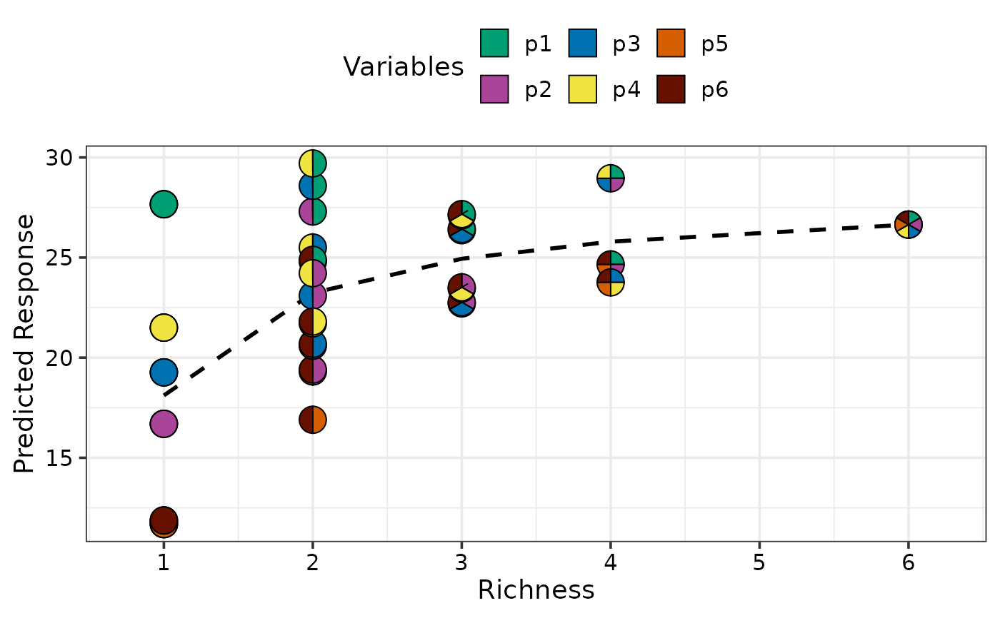
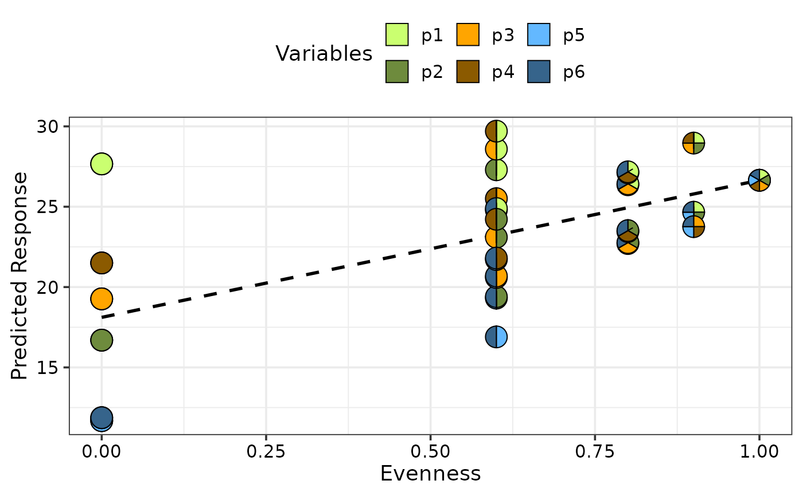
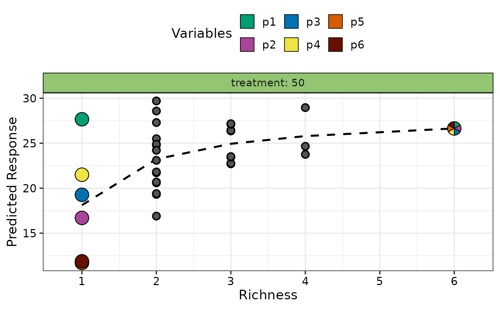
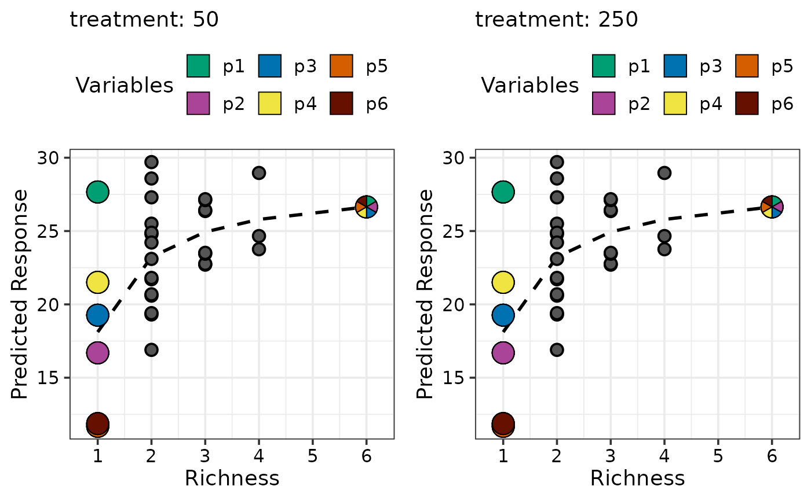
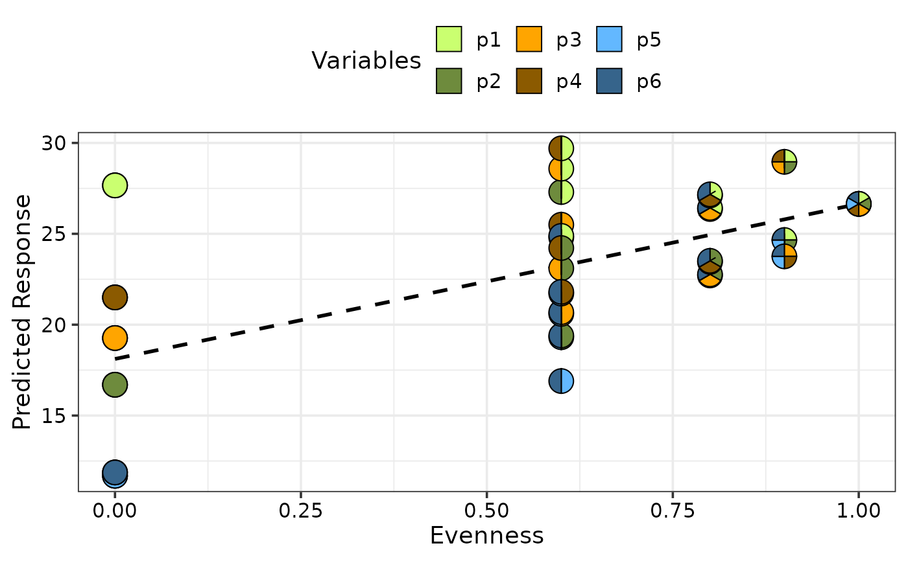
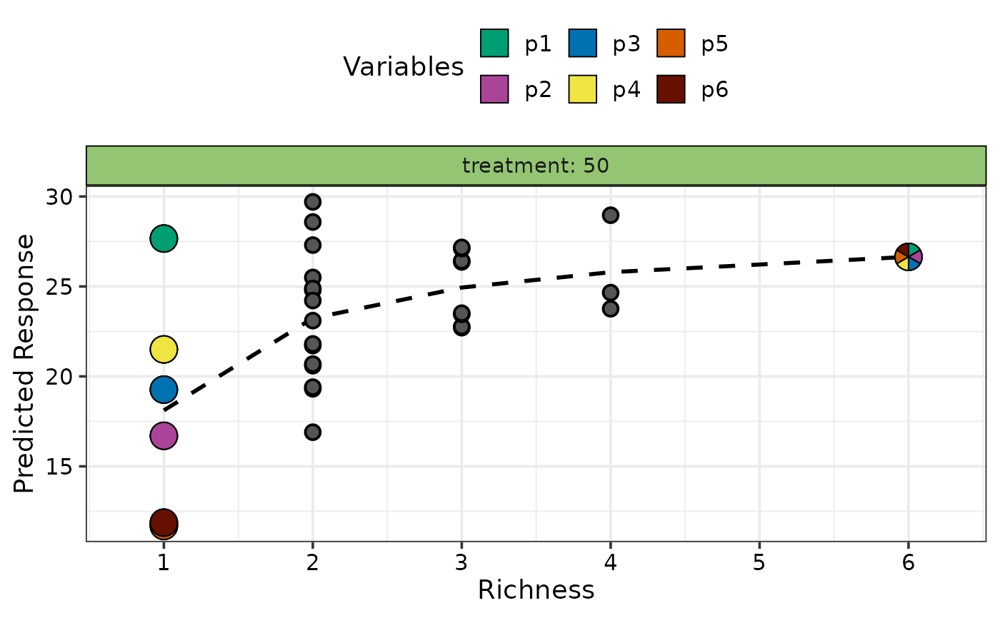
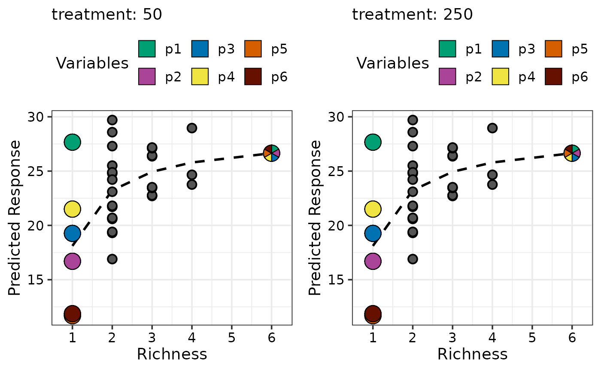

DI specific wrapper for visualising change in response over diversity gradient
gradient_change.RdA scatter-plot of the predicted response (or raw response) over a diversity
gradient for specific observations is shown. The points can be overlaid with
`pie-glyphs` to show the relative
proportions of the compositional variables. The average change in any user-chosen
variable over the chosen diversity gradient can also be shown using the `y_var`
parameter.
This is a wrapper function specifically for statistical models fit using the
DI() function from the
DImodels R package and it implicitly
calls gradient_change_data followed by
gradient_change_plot. If your model object isn't fit using
DImodels, the associated data and plot functions can instead be called manually.
Arguments
- model
A Diversity Interactions model object fit by using the
DI()function from theDImodelspackage.- data
A dataframe specifying communities of interest for which user wants to visualise the gradient. If left blank, the data used to fit the model will be used.
- gradient
Diversity gradient to show on the X-axis, one of "richness" or "evenness". Defaults to "richness". See `Details` for more information.
- add_var
A list specifying values for additional predictor variables in the model independent of the compositional predictor variables. This could be useful for comparing the predictions across different values for a non-compositional variable. If specified as a list, it will be expanded to show a plot for each unique combination of values specified, while if specified as a data-frame, one plot would be generated for each row in the data and they will be arranged in a grid according to the value specified in `nrow` and `ncol`.
- plot
A boolean variable indicating whether to create the plot or return the prepared data instead. The default `TRUE` creates the plot while `FALSE` would return the prepared data for plotting. Could be useful for if user wants to modify the data first and then call the plotting function manually.
- average
A boolean value indicating whether to plot a line indicating the average change in the predicted response with respect to the variable shown on the X-axis. The average is calculated at the median value of any variables not specified.
- y_var
A character string indicating the column name of the variable to be shown on the Y-axis. This could be useful for plotting raw data on the Y-axis. By default has a value of ".Pred" referring to the column containing model predictions.
- pie_data
Showing all points on the graph as pie-glyphs could be resource intensive. Hence a subset of data-frame specified in `data`, can be specified here to visualise only specific points as pie-glyphs.
- pie_colours
A character vector specifying the colours for the slices within the pie-glyphs.
- pie_radius
A numeric value specifying the radius (in cm) for the pie-glyphs.
- points_size
A numeric value specifying the size of points (when pie-glyphs not shown) shown in the plots.
- facet_var
A character string or numeric index identifying the column in the data to be used for faceting the plot into multiple panels.
- nrow
Number of rows in which to arrange the final plot (when `add_var` is specified).
- ncol
Number of columns in which to arrange the final plot (when `add_var` is specified).
Value
A ggmultiplot (ggplot if single plot is returned) class object or data-frame (if `plot = FALSE`)
Details
Currently two diversity gradients are supported
Richness: A metric describing the number of non-zero compositional variables in an observation.
Evenness: A metric quantifying the relative abundances of all compositional variables in an observation. Defined as $$(2s/(s-1)) \sum_{i, j = 1; i < j}^{s}{p_i * p_j}$$ where \(s\) is the total number of compositional variables and \(p_i\) and \(p_j\) are the proportions of the variables \(i\) and \(j\). See Kirwan et al., 2007 <doi:10.1890/08-1684.1 > and Kirwan et al., 2009 <doi:10.1890/08-1684.1 > for more information.
Here's a small example of how these metrics are calculated for a few observations. Suppose we have four compositional variables (i.e. \(s = 4\)) and have the following three observations
A = (0.5, 0.5, 0, 0)
B = (0.25, 0.25, 0.25, 0.25)
C = (1, 0, 0, 0)
The richness values for these three observations would be as follows
A = 2 (Since two of the four compositional variables were non-zero)
B = 4 (Since all four compositional variables were non-zero)
C = 1 (Since one of the four compositional variables were non-zero)
The evenness values would be calculated as follows
A = \(2*4/(4-1)*(0.5*0.5+0.5*0+0.5*0+0.5*0+0.5*0+0*0) = 0.67\)
B = \(2*4/(4-1)*(0.25*0.25+0.25*0.25+0..25*0.25+0.25*0.25+0.25*0.25+0.25*0) = 1\)
C = \(2*4/(4-1)*(1*0+1*0+1*0+0*0+0*0+0*0) = 0\)
Examples
## Load DImodels package to fit the model
library(DImodels)
library(dplyr)
## Load data
data(sim4)
sim4 <- sim4 %>% filter(treatment == 50)
## Fit DI model
mod <- DI(prop = 3:8, DImodel = "AV", data = sim4, y = "response") %>%
suppressWarnings()
#> Fitted model: Average interactions 'AV' DImodel
## Create visualisation
## By default, 'richness' is the gradient and communities from the
## raw data are used to calculate average response
gradient_change(model = mod)
#> ✔ Finished data preparation
#> ✔ Created plot.

## Specify custom data
gradient_change(model = mod, data = sim4 %>% filter(richness <= 4))
#> ✔ Finished data preparation
#> ✔ Created plot.
## Create plot for all equi-proportional communities at a
## given level of richness
plot_data <- get_equi_comms(6, variables = paste0("p", 1:6))
gradient_change(model = mod, data = plot_data)
#> ✔ Finished data preparation
#> ✔ Created plot.
 ## Can also plot average response across evenness and
## change colours of the pie-slices using `pie_colours`
gradient_change(model = mod, gradient = "evenness",
pie_colours = c("darkolivegreen1", "darkolivegreen4",
"orange1", "orange4",
"steelblue1", "steelblue4"))
#> ✔ Finished data preparation
#> ✔ Created plot.

## Manually specify only specific communities to be shown as pie-chart
## glyphs using `pie_data` and `facet_var` to facet the plot on
## an additional variable.
gradient_change(model = mod,
pie_data = sim4 %>% filter(richness %in% c(1, 6)),
facet_var = "treatment")
#> ✔ Finished data preparation
#> ✔ Created plot.

## Use `add_var` to add additional variables independent of the compositions
## Multiple plots will be produced and can be arranged using nrow and ncol
## Create plot arranged in 2 columns
# \donttest{
gradient_change(model = mod,
data = sim4[, -2],
add_var = list("treatment" = c(50, 250)),
pie_data = sim4[, -2] %>% filter(richness %in% c(1, 6)),
ncol = 2)
#> ✔ Finished data preparation
#> ✔ Created all plots.

# }
## Specify `plot = FALSE` to not create the plot but return the prepared data
head(gradient_change(model = mod, plot = FALSE,
pie_data = sim4 %>% filter(richness %in% c(1, 6)),
facet_var = "treatment"))
#> ✔ Finished data preparation
#> # A tibble: 6 × 14
#> richness treatment p1 p2 p3 p4 p5 p6 response .Richness
#> <int> <dbl> <dbl> <dbl> <dbl> <dbl> <dbl> <dbl> <dbl> <dbl>
#> 1 1 50 1 0 0 0 0 0 26.3 1
#> 2 1 50 1 0 0 0 0 0 29.1 1
#> 3 1 50 1 0 0 0 0 0 27.6 1
#> 4 1 50 0 1 0 0 0 0 17.4 1
#> 5 1 50 0 1 0 0 0 0 15.7 1
#> 6 1 50 0 1 0 0 0 0 14.3 1
#> # ℹ 4 more variables: .Evenness <dbl>, .Gradient <chr>, .Pred <dbl>, .Avg <dbl>
## Can also plot average response across evenness and
## change colours of the pie-slices using `pie_colours`
gradient_change(model = mod, gradient = "evenness",
pie_colours = c("darkolivegreen1", "darkolivegreen4",
"orange1", "orange4",
"steelblue1", "steelblue4"))
#> ✔ Finished data preparation
#> ✔ Created plot.

## Manually specify only specific communities to be shown as pie-chart
## glyphs using `pie_data` and `facet_var` to facet the plot on
## an additional variable.
gradient_change(model = mod,
pie_data = sim4 %>% filter(richness %in% c(1, 6)),
facet_var = "treatment")
#> ✔ Finished data preparation
#> ✔ Created plot.

## Use `add_var` to add additional variables independent of the compositions
## Multiple plots will be produced and can be arranged using nrow and ncol
## Create plot arranged in 2 columns
# \donttest{
gradient_change(model = mod,
data = sim4[, -2],
add_var = list("treatment" = c(50, 250)),
pie_data = sim4[, -2] %>% filter(richness %in% c(1, 6)),
ncol = 2)
#> ✔ Finished data preparation
#> ✔ Created all plots.

# }
## Specify `plot = FALSE` to not create the plot but return the prepared data
head(gradient_change(model = mod, plot = FALSE,
pie_data = sim4 %>% filter(richness %in% c(1, 6)),
facet_var = "treatment"))
#> ✔ Finished data preparation
#> # A tibble: 6 × 14
#> richness treatment p1 p2 p3 p4 p5 p6 response .Richness
#> <int> <dbl> <dbl> <dbl> <dbl> <dbl> <dbl> <dbl> <dbl> <dbl>
#> 1 1 50 1 0 0 0 0 0 26.3 1
#> 2 1 50 1 0 0 0 0 0 29.1 1
#> 3 1 50 1 0 0 0 0 0 27.6 1
#> 4 1 50 0 1 0 0 0 0 17.4 1
#> 5 1 50 0 1 0 0 0 0 15.7 1
#> 6 1 50 0 1 0 0 0 0 14.3 1
#> # ℹ 4 more variables: .Evenness <dbl>, .Gradient <chr>, .Pred <dbl>, .Avg <dbl>